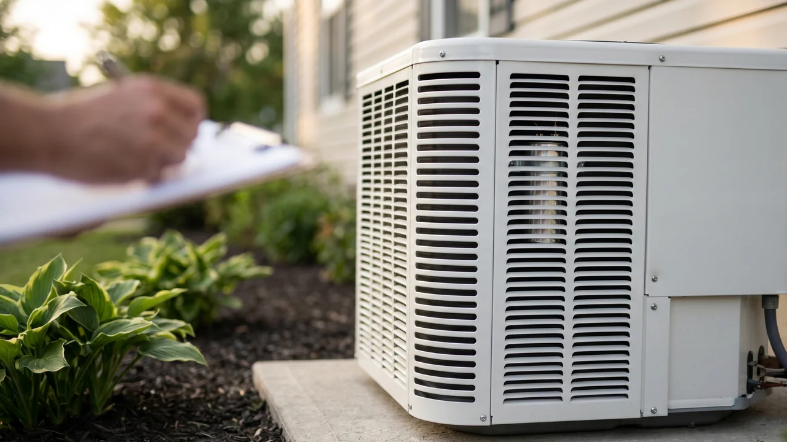

Advertising Disclosure: This site may receive compensation for service connections made through this page. Content is editorially independent.
A bulging or leaking AC capacitor is the most catchable summer AC failure and the one with the highest DIY injury rate. The safe 60-second protocol: kill the breaker to the outdoor unit, look at the capacitor through the closed access-panel louvers from at least 3 feet away, and call a technician. Do NOT open the panel, touch the capacitor, attempt to discharge it, or replace it yourself — the stored 370-440V charge persists after power is cut and the discharge procedure is OSHA-governed technician work. A capacitor replacement on the service call typically runs in the $90 to $450 minor-AC-repair range per our cost guide, finishes in 30-60 minutes including diagnosis, and almost always pays for itself by avoiding the secondary compressor damage a degraded capacitor accumulates over weeks of running.
What a Failing Capacitor Looks and Sounds Like
An AC run capacitor is the cylindrical metal can mounted inside the outdoor condenser cabinet that gives the compressor motor and the condenser fan motor the extra rotational push they need to start. When it fails, the system tries to start but cannot — producing a set of symptoms that are unusually consistent across brands and ages.
Visual indicators (visible through the closed panel louvers):
- A bulging or domed top. A healthy capacitor lid is flat or very slightly concave. A failing one balloons outward as the internal pressure rises from the electrolyte breaking down. The lid bulge is often the only visible sign before a catastrophic failure.
- Oily residue or amber fluid pooled at the base. When the seal at the bottom of the can gives way, the dielectric electrolyte (an oil-based fluid) leaks out and pools on the cabinet floor or runs down the side of the can. The fluid is mildly hazardous and the residue does not evaporate; it remains visible until cleaned by a technician.
- Scorching or discoloration on the casing or nearby wiring. If the capacitor ruptured slightly or arced to a nearby terminal, the metal shows heat discoloration and the adjacent wire insulation may be browned or melted.
Audible patterns from the outdoor unit:
- Loud humming or buzzing lasting 10 to 30 seconds with no fan rotation and no compressor start, followed by a click as the internal thermal overload trips off.
- The same hum-then-click cycle repeating every few minutes as the thermostat keeps calling for cooling.
- A high-pitched whine when the compressor finally manages to start, signaling the run capacitor is providing degraded assistance.
- The outdoor fan blade spinning slowly or starting only after physical assistance — do not push it; the fan blade can be sharp and the motor can re-energize without warning. This pattern is a technician-only diagnostic indicator.
A failing-but-not-yet-bulged capacitor often shows no visible damage at all — it fails electrically (microfarad reading drops below the data-plate rating) before it fails physically. "Looks fine" therefore does not rule out capacitor failure; it just rules out the worst-case scenarios. The microfarad measurement, which is the only definitive test, is technician work governed by ACCA technical standards and requires de-energizing the system, discharging the capacitor with an insulated tool, and reading it with a meter rated for the application.
Why "Just Run It Until the Tech Comes Out" Is Not Safe
A normal homeowner instinct on a hot day is to keep the thermostat calling for cooling so the system has a chance to start — "maybe it will catch on its own." When the visible symptom is a bulging or leaking capacitor, this is the wrong instinct. Three failure modes compound for every minute the system tries-and-fails to start:
Compressor damage from locked-rotor amperage. Every failed start attempt draws "locked-rotor amperage" (LRA) through the compressor windings — a current spike 3 to 6 times the normal running amperage. The windings tolerate brief LRA during a healthy start, but repeated 10-to-30-second LRA cycles cook the insulation. A capacitor failure that gets ignored for a week can turn a $200 capacitor swap into a $1,500-$3,500 compressor replacement (per the 2026 HVAC cost guide major-repair range). DOE EERE's residential HVAC maintenance guidance frames this cascade as the classic "ignore-the-cheap-failure, buy-the-expensive-one" pattern that scheduled-maintenance is meant to prevent.
Electrical fire risk in the disconnect. The repeated high-current draw heats every electrical connection between the breaker and the compressor — the breaker terminal, the disconnect contacts, the contactor in the condenser cabinet, the capacitor terminals themselves. Worn or corroded connections that handle normal amperage fine begin to arc and discolor under repeated LRA cycles. A bulging capacitor that ruptures during one of these cycles can ignite the leaked electrolyte if a hot connection is nearby.
Refrigerant-side damage from short-cycling. A system that starts and immediately stops — "short-cycles" — subjects the sealed refrigerant loop to repeated pressure swings that fatigue the joints. On 2025-and-newer systems being deployed under the EPA AIM Act refrigerant transition using R-454B, the A2L safety classification adds an additional reason short-cycling is best avoided.
The cost-minimizing move is the opposite of "let it run." Turn the thermostat to OFF (not COOL), kill the breaker to the outdoor unit at the service panel, and call. Every hour you do not run the system after the visible failure is a few dollars saved on the replacement.
The 60-Second Homeowner Safety Check (Look Only)
Four actions, all from a safe distance, completed in about 60 seconds. None require opening any panel, touching any component, or testing anything electrical.
- Turn the thermostat to OFF (not COOL, not AUTO). Stop the indoor side from continuing to call for cooling. About 5 seconds.
- Kill the breaker for the outdoor condenser at your main service panel. The breaker is usually labeled "AC," "Condenser," or "Air Conditioner." Flip it to OFF. About 10 seconds.
- Walk to the outdoor unit and look through the side panel louvers from at least 3 feet away. You are looking for one of the three visible indicators above — a bulging capacitor top, oily residue at the unit's base or on the cabinet floor, scorching on visible wiring. About 30 seconds.
- Take a photo through the louvers if you can do so without crouching close to the unit. A clear photo of the capacitor and surrounding wiring helps the dispatcher route the right technician and have the right replacement part on the truck. About 15 seconds.
That is the entire safe homeowner check. Do not open the access panel, do not pull the disconnect at the unit, do not touch the capacitor or the wiring, do not attempt to discharge anything, do not run a multimeter on any terminal, do not push the fan blade, do not order a replacement capacitor online. Every one of those actions is technician work, and the consequences for getting it wrong range from a 240V shock to ignition of leaked electrolyte to voiding the manufacturer warranty. Our safety page covers the full DIY boundary for homeowner HVAC tasks — capacitor work is firmly outside it. If your safe homeowner check finds any of the three visible indicators, or if the audible symptoms match the patterns above and the visible check is inconclusive, book the call.
Get connected with an independent HVAC technician in your area — especially during summer heat advisories when capacitor failures spike.
Call Now — (844) 582-1795Disclosure: We are a referral service and may receive compensation for qualified calls. Calls may be routed to an independent provider network and may be recorded. Pricing and availability vary by provider and location.
What the Technician Will Test on Arrival
A competent technician on a capacitor-suspected service call follows a fixed four-test sequence after the homeowner interview. The whole sequence sits inside the broader 45 to 60 minute routine service call we cover in what an HVAC technician actually does on a service call; what follows is the capacitor-specific subset.
- Microfarad measurement vs. data-plate rating. After killing power and discharging the capacitor with an insulated discharge tool, the technician removes the wires and reads the capacitance with a meter rated for the application. A run capacitor whose measured microfarads (µF) are more than 6% below the rated value is failed and is the cause on a meaningful share of summer no-cool calls. A dual-run capacitor (one can serving both compressor and fan) is read on both halves; either half being out-of-spec means the capacitor needs replacement.
- Voltage rating verification. The replacement must match or exceed the voltage rating on the data plate (typically 370V or 440V). A 370V can swapped into a 440V application will fail again under load. The technician also verifies the new capacitor's microfarad rating matches the data plate exactly — "close enough" capacitor microfarads cause new failures.
- Weather sealing inspection at the base. If the failing capacitor leaked, the technician looks for evidence that water from rain or condensation entered the cabinet and contributed to the failure. A degraded grommet or a cracked condensate-management seal is the secondary issue that needs to be fixed alongside the capacitor itself, or the new capacitor fails on the same root cause.
- Fan motor and compressor amp-draw test under load. Once the new capacitor is wired in and power restored, the technician clamps an ammeter on the compressor and fan-motor leads and reads the actual current draw under running conditions. Both should be at or below the rated full-load amperage (FLA) on the data plate. High amp draw on the compressor after a capacitor replacement is the diagnostic for early compressor wear — the capacitor failed BECAUSE the compressor is degrading, and a second service call is in the future. Catching this on the same visit gives the homeowner the option to plan for replacement vs. running the system to its remaining-life ceiling.
This four-test sequence is what justifies the ENERGY STAR routine maintenance guidance that capacitor inspection should be part of an annual tune-up. The capacitor is a $30 part with high failure visibility; catching the degradation at 80% of rated microfarads on a spring tune-up prevents the 100%-failed-during-July-heatwave call.
Spotting Honest Diagnosis vs. Replacement Pressure
Three patterns separate competent capacitor diagnosis from a tech who walks in and immediately recommends a full system replacement.
The microfarad measurement gets shared. A competent tech can tell you the measured value and the rated value. "Your capacitor reads 32µF on a 45µF rating — that is 71% of capacity, well below the 94% failure threshold" is honest diagnosis. "Your capacitor is bad and you need a new one" without a specific number is a warning sign — ask the technician for the measurement. Any competent tech welcomes the question because the measurement is what justifies the repair quote.
Repair-first framing on systems under 10 years. A 6-year-old system with a failed capacitor is not a replacement candidate — it is a capacitor replacement that costs the homeowner less than $450. A tech who walks in and recommends a full equipment replacement on a 6-year-old system is upselling. Cross-reference our repair-or-replace framework for the age-and-cost math; the framework is intentionally conservative on replacement to avoid exactly this upsell pattern. On a 13-15+ year old system where the capacitor failed because of compressor wear, the replacement conversation is legitimate — but it is still a conversation, not a pressure pitch.
The amp-draw test result gets shared. After the replacement, the compressor and fan-motor amp readings should be in normal range. If they are high, the tech should say so — "your new capacitor is running fine but your compressor is pulling 18 amps on a 16-amp rated load, which suggests the compressor is wearing." That is honest diagnosis. A tech who replaces the capacitor, packs up, and does not run the amp test is doing half the job.
The cluster of related symptoms is also worth knowing about. If your unit is also producing the symptoms in our AC compressor buzzing / fan not spinning article or tripping the breaker repeatedly, the capacitor is one possible cause among several — the tech's measurements determine which. If your unit is making the clicking-without-action pattern, see our AC contactor clicking article — the contactor is a different component with similar audible symptoms but a different fix.
When You Call: What to Tell the Dispatcher
Five items make the call fast and route the right technician with the right parts on the truck. Have these ready before you dial.
- System type and approximate age. Central AC, heat pump, or mini-split; year of manufacture from the data plate if accessible.
- Brand and model number. Photo through the louvers covers this if you cannot open the panel (which you should not). The dispatcher uses brand and model to pull the correct microfarad/voltage rating from the parts catalog.
- The visible symptoms. "I see bulging on the top of the cylindrical metal can," "there is oily fluid pooled at the base of the unit," "the fan is spinning slowly," or "the unit hums for 20 seconds and then clicks off."
- When the symptoms started and the recent temperature pattern. Capacitor failures spike during the first sustained heat-advisory week of summer because the previously-degrading capacitor cannot deliver the higher start current the compressor needs at peak ambient temperature.
- Whether anyone vulnerable to heat (infant, elderly, medical condition) is in the home. This changes priority routing and may move you ahead of non-urgent calls during demand spikes.
Climate context: capacitor failures are most concentrated in hot-humid metros like Jacksonville, Florida and Mobile, Alabama, where summer ambient temperatures stay in the upper 90s for weeks at a time, and in hot-dry metros like Irvine, California where the same pattern plays out in late summer. In mixed-humid metros like Tulsa, Oklahoma the spike is shorter but sharper — July and August absorb most of the season's capacitor calls. The dispatcher in these markets is used to the symptoms and the routing is fast.
Trusted Industry Sources
The diagnostic-sequence and electrical-safety guidance in this article is consistent with published guidance from:
- OSHA — Electrical Safety (29 CFR 1910 Subpart S)
- EPA — Section 608 Technician Certification
- EPA — AIM Act (refrigerant transition)
- U.S. Department of Energy — Maintaining Your Air Conditioner
- ENERGY STAR — Clean Heating & Cooling
- ACCA — Technical Manuals
Do not wait — a degrading capacitor damages the compressor with every failed start. Get a technician dispatched to your area.
Call Now — (844) 582-1795Disclosure: We are a referral service and may receive compensation for qualified calls. Calls may be routed to an independent provider network and may be recorded. Pricing and availability vary by provider and location.
Frequently Asked Questions
Yes — treat it as dangerous. An HVAC run capacitor stores electrical energy at 370 or 440 volts AC and holds a potentially lethal charge for some time after power is cut. A capacitor that is bulging or leaking is also at increased risk of rupturing if disturbed, releasing the electrolyte and the stored charge unpredictably. The safe homeowner response is identical regardless of whether the capacitor looks intact: power off at the breaker, look only from at least 3 feet away, do not open the access panel, do not touch any wiring, and call a qualified HVAC technician. OSHA electrical-safety standards govern the technician's de-energizing and verify-dead procedure — this is not a DIY repair, even with the breaker off.
Three visual signs are reliable through-the-panel-louvers indicators when the access panel is closed and the system is powered off: a domed or bulging top (the metal lid pushed upward instead of flat), oily residue or amber liquid pooled at the base of the capacitor or on the cabinet floor (the dielectric electrolyte leaking out), and visible scorching or discoloration on the capacitor casing or nearby wiring. A failing-but-still-intact capacitor often shows no visible damage — it fails electrically (low microfarad reading) before it fails physically. So "looks fine" does not rule out capacitor failure; the visual check rules IN the worst cases. The technician's microfarad-meter test rules out the rest.
Four audible patterns commonly point to capacitor failure. A loud humming or buzzing from the outdoor unit lasting 10 to 30 seconds with no fan spin or compressor start, often followed by a click as the internal overload trips it off. The system trying to start every few minutes (the same hum-then-click cycle repeating). A high-pitched whine when the compressor finally starts, indicating the run capacitor is providing degraded but not absent assistance. The outdoor fan spinning slowly or only after you give it a manual push (do NOT do this — it is a technician-only diagnostic). All four patterns warrant the safety check and call sequence. None of them justify opening the access panel.
No, and the math saying you should usually does not survive the safety math saying you should not. Capacitor replacement is a sub-$200 repair at most contractors (per our cost guide, minor AC repairs run $90 to $450 fully loaded). The risk of self-replacement is electrical: an improperly discharged capacitor can deliver a stored shock at 370 to 440 volts, well above the 50V threshold OSHA considers safe to contact. There is also a diagnostic risk: a capacitor rarely fails in isolation — it usually fails because the motor it serves is drawing higher amperage than the capacitor was sized for, and replacing the capacitor without measuring the motor amp draw means the new capacitor fails on the same root cause. The technician's job is the discharge sequence AND the root-cause diagnosis. The price you save by DIY-ing the swap is the price you pay twice when the new one fails next month.
A capacitor diagnosis and replacement typically takes 30 to 60 minutes from technician arrival to system back online. The diagnostic sequence (visual inspection, breaker check, microfarad measurement, motor amp draw under load) takes 15 to 20 minutes. The replacement itself — if the capacitor IS the diagnosis — takes 10 to 15 minutes once power is killed, the old capacitor is discharged, and a matching microfarad/voltage replacement is on the truck (standard sizes usually are). The remaining time is the homeowner debrief, the written estimate, and the post-replacement system test (verifying the system starts and runs at normal amp draw). This sits inside the 45 to 60 minute window we cover in the full service-call sequence.
Local HVAC Service Areas
Cool Call Pro connects homeowners with independent HVAC technicians nationwide. Find a pro in Jacksonville (FL), Mobile (AL), Irvine (CA), or Tulsa (OK), or browse by state: Florida, Alabama, or all locations.